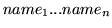
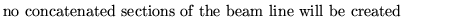
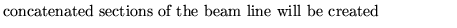
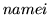
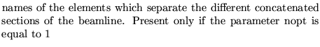

It is also possible to concatenate parts of the beamline lying between individual elements defined in a list. This allows for faster fitting operations in COSY.
Since the COSY program operates in canonical variables it is ESSENTIAL that the symplectic option with output in canonical variables be turned on.
Input format
COSY translation ..... (up to 80 characters)
nopt
 end
Parameter definitions
nopt
0 
1 
 
Examples
cosy 0; stop cosy 1 mag1 mag2 end; stop